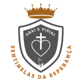

Pastorais e movimentos
Bem-vindo ao nosso portal oficial dedicado às pastorais e movimentos da [Nome da Igreja]! Aqui, você encontrará informações valiosas sobre como nossa comunidade se une para servir a Deus e ao próximo. Explore, envolva-se e descubra como você pode fazer parte dessa jornada espiritual transformadora.
Sobre Nós
Nossa Missão:
Nossa igreja é um lugar de acolhimento, crescimento e serviço. Trabalhamos para promover a fé, o amor e a solidariedade em nossa comunidade e além. As nossas pastorais e movimentos são parte fundamental dessa missão, oferecendo diversas oportunidades para que todos possam participar ativamente da vida da igreja.
Nossos Valores:
- Fé e Devoção: Cultivamos uma fé viva e comprometida com os ensinamentos de Cristo.
- Solidariedade: Apoiamos e ajudamos aqueles que estão em necessidade.
- Comunhão: Promovemos um ambiente de amizade e suporte mútuo.
- Crescimento Espiritual: Incentivamos o desenvolvimento contínuo da vida espiritual de nossos membros.
Nossas Pastorais
Entre nos links abaixo e conheça os trabalhos realizados por nossas pastorais
Grupo de Jovens GOJ
Grupo de Jovens Sentinelas da Esperança
O Grupo de Jovens Sentinelas da Esperança nasceu em Janeiro de 2024, fruto do anseio e desejo dos jovens da matriz em se reunir e viver a juventude em unidade, com o apoio e direção espiritual do Padre José Nilson o nome foi escolhido para dar luz ao caminho do jovens, significando o sentinela, soldado, vigia. Esperança que é o próprio Cristo.
Meninas de Maria
Pascom

A Pastoral da Comunicação da nossa igreja! Somos a ponte que conecta nossa comunidade, levando a mensagem de fé, esperança e amor através dos meios de comunicação, para que juntos possamos viver e compartilhar o Evangelho
Pastoral da acolhida
Pastoral da Catequese
A catequese é uma ação da igreja que nasce do mandato missionário de Jesus, quando disse "ide ,pois, fazer discípulos entre todas as nações". A catequese tem por objetivo acompanhar e educar na fé e para a fé, crianças, jovens e adultos.
Pastoral da Comunicação (BIPS)
Pastoral da Criança
Pastoral da Solidariedade:
Engajada em projetos de ação social, apoio a pessoas em situação de vulnerabilidade e desenvolvimento de iniciativas para promover a justiça e a inclusão.
Pastoral de Assuntos Econômicos
Pastoral do Batismo
Pastoral do Canto
Pastoral do dízimo
Pastoral dos Coroinhas
Pastoral dos Ministros
Pastoral Familiar:
Acompanha e fortalece as famílias, promovendo eventos, retiros e aconselhamento para ajudar a construir relacionamentos saudáveis e sólidos.
Pastoral Infância Missionária:
Pastoral Litúrgica:
Responsável pela organização das celebrações litúrgicas e sacraments, garantindo que cada momento de culto seja significativo e inspirador.
Nossos Movimentos
Entre nos links abaixo e conheça os trabalhos realizados por nossos movimentos
Apostolado da Oração
Divina Misericórdia
RCC
Rosário Vivo
Terço dos homens
Zeladoras de Capelinha
Como Participar
Envolva-se:
Cada um de nós tem um papel único a desempenhar na construção de uma comunidade vibrante e amorosa. Encorajamos todos a se envolver nas nossas pastorais e movimentos. Confira os seguintes passos para começar:
- Escolha uma Pastoral ou Movimento: Veja as áreas que mais lhe interessam e como elas se alinham com seus dons e paixões.
- Participe de um Encontro: Venha conhecer melhor o grupo, participar das reuniões e se engajar nas atividades.
- Voluntarie-se: Ofereça seu tempo e habilidades para contribuir com os projetos e iniciativas.
- Mantenha-se Informado: Acompanhe nossas atualizações e notícias para estar por dentro das próximas atividades e eventos.
Contato
Estamos Aqui para Ajudar:
Tem alguma dúvida ou deseja mais informações? Entre em contato conosco!
- Telefone: [Número de Telefone]
- E-mail: [Endereço de E-mail]
- Endereço: [Endereço da Igreja]
- Redes Sociais: [Links para redes sociais]
Testemunhos
O que Dizem Sobre Nós:
"Participar da Pastoral da Juventude foi transformador para minha vida. Senti-me acolhido e encontrei uma verdadeira família na igreja." – [Nome do Membro]
"A Pastoral Familiar nos ajudou a fortalecer nossa relação e nos deu ferramentas para enfrentar os desafios da vida em família." – [Nome do Membro]